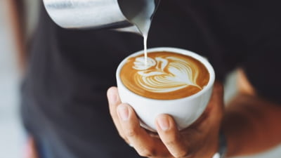
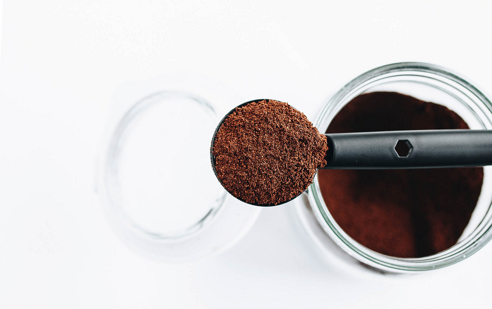
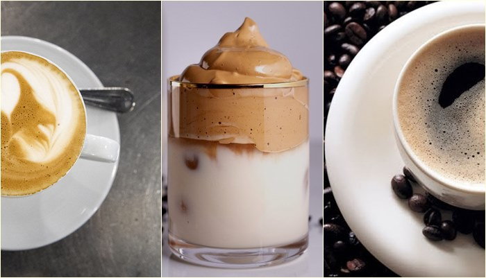

Articol 1
Lavazza Qualita Oro

Este o cafea macinata care isi pastreaza consumatori fideli de zeci de ani si continua sa
cucereasca altii noi prin gustul fin si dulceata caracteristica unei cafele 100% Arabica de cea mai buna
calitate. Este usor de recunoscut dupa ambalajul auriu, fiind singura cafea de la Lavazza ambalata in aceasta
culoare stralucitoare. Gustul este unul fructat, amintind de o combinatie savuroasa de portocale confiate si
ciocolata.
Articol 2
Lavazza Qualita Rossa

Fata de Lavazza Qualita Oro, Qualita Rossa este potrivita pentru cei ce prefera o ceasca de cafea cu gust usor
amarui, tonic si revigorant. Este o cafea echilibrata, obtinuta din recolte de Arabica si Robusta. Proprietatile
acestea, la care se adauga notele delicioase de ciocolata, fac din aceasta cafea o alegere foarte potrivita
pentru micul dejun.
Articol 3
Lavazza Dek

Pntru aceia care nu pot sau doresc sa consume cofeina, Lavazza a creat o cafea care nu iroseste
nimic din particularitatile unei cafele de top: gust, crema si aroma placuta. Lavazza Dek nu este o cafea
decofeinizata obisnuita, ci este una obtinuta din boabe de cafea premium, decofinizate prin metode naturale.
Particularitatile organoleptice sunt pe baza de miere si migdale.